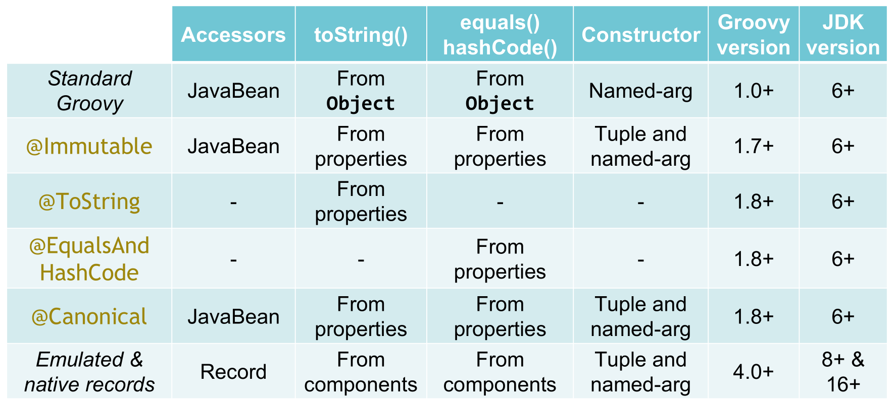
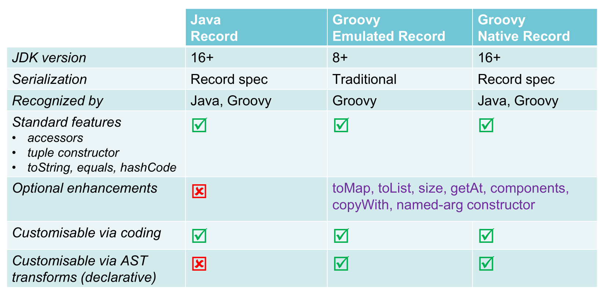

Groovy Records
Author: Paul King
Published: 2023-04-02 08:22PM
A common scenario when programming is the need to group together a bunch of related properties. You may be able to use arrays, some form of tuples, or maps to group such properties. Some languages might support constructs like structs. In Java, grouping such properties into a class is a natural fit. Unfortunately, creating such classes, once you add in all the expected methods and behaviors, can involve considerable boilerplate code.
Starting with JDK16 (with previews from JDK14), Java introduced records as a compact form for declaring "data" classes. Such classes hold "data" and (almost) nothing else. Java chose the very common scenario of holding immutable data. With this context, and following a few restrictions, it becomes a relatively easy task for the Java compiler to generate much of the boilerplate for such classes.
This blog looks at Groovy’s record implementation. Groovy supports the same features as Java but adds some additional enhancements and customisation. Groovy’s implementation builds upon existing techniques, like compile-time metaprogramming (aka AST transforms), that are used to reduce boilerplate for other scenarios.
Introduction
First, let’s look at what creating a record looks like:
record Point(int x, int y, String color) { }The properties we are grouping, are called components.
In this case two integers, x and y, and a string color.
Using it is similar to how we’d use a traditionally defined Point class
which had a constructor with the same parameters as our record definition:
var bluePointAtOrigin = new Point(0, 0, 'Blue')We might want to check the value of one of our point’s components:
assert bluePointAtOrigin.color() == 'Blue'We can also print out the point (which calls its toString() method):
println bluePointAtOriginWhich would have this output:
Point[x=0, y=0, color=Blue]
All the features of Java records are supported. One example is compact constructors. If we wanted the color to not be left blank, we could add a check using the compact constructors form, giving an alternative definition such as:
record Point(int x, int y, String color) {
Point { assert !color.blank }
}More formally, a record is a class that:
-
Is implicitly final (so can’t be extended)
-
Has a private final field for each component, e.g.
color -
Has an accessor method for each component of the same name, e.g.
color() -
Has a default
Point(int, int, String)constructor -
Has a default serialVersionUID of
0Land special serialization code -
Has implicit
toString(),equals()andhashCode()methods -
Implicitly extends the
java.lang.Recordclass (so can’t extend another class but may implement one or more interfaces)
Optional enhancements
Groovy records by default have an additional named-argument style constructor:
var greenPointAtOrigin = new Point(x:0, y:0, color:'Green')By default, Groovy records also have generated getAt, size, toList, and
toMap methods. The getAt method provides Groovy’s normal array-like indexing.
The size method returns the number of components.
The toList method returns the component values.
The toMap method returns the component values along with the component name.
Here are examples:
assert bluePointAtOrigin.size() == 3
assert bluePointAtOrigin[2] == 'Blue'
assert bluePointAtOrigin.toList() == [0, 0, 'Blue']
assert bluePointAtOrigin.toMap() == [x:0, y:0, color:'Blue']The getAt method also enables destructuring through the multi-assignment
statement as this example shows:
def (x, y, c) = bluePointAtOrigin
assert "$x $y $c" == '0 0 Blue'Shortly, we’ll look at copyWith which is useful for creating one record from another
record of the same type. The toMap can be handy when creating a record from a different type as shown here. In our example, we surmise that in the same month as realising a book,
we might want to release an article about the book for marketing purposes:
record Book(String name, String author, YearMonth published) {}
record Article(String name, String author, YearMonth published, String publisher) {}
def b = new Book('Groovy in Action', 'Dierk & Paul', YearMonth.of(2015, 06))
def a = new Article(*:b.toMap(), publisher: 'InfoQ')These optional enhancements can be turned off if not required by setting
various annotation attributes of the same name to false on the RecordOptions annotation.
Two other methods, copyWith and components, aren’t enabled by default
but can be enabled by setting the respectively named annotation attributes to true
as shown here:
@RecordOptions(components = true, copyWith = true)
record Point(int x, int y, String color) { }The copyWith method can be used as follows:
var redPointAtOrigin = bluePointAtOrigin.copyWith(color: 'Red')
assert redPointAtOrigin.toString() == 'Point[x=0, y=0, color=Red]'This is similar to Kotlin’s copy method for data classes.
The components method returns a typed tuple. This is especially useful
when type checking is enabled like in this method:
@TypeChecked
String description(Point p) {
p.components().with{ "${v3.toUpperCase()} point at ($v1,$v2)" }
}Note that the 3rd element in the tuple has type String,
so we can call the toUpperCase method.
We can use this method as follows:
assert description(redPointAtOrigin) == 'RED point at (0,0)'This is Groovy’s equivalent to Kotlin’s componentN methods for data classes.
Internal details
Some of the details in this section aren’t essential to know but can be useful to understand how to customise record definitions.
When we write a record declaration like this:
record Point(int x, int y, String color) { }It is equivalent to the following traditional declaration:
@RecordType
class Point {
int x
int y
String color
}You will almost never write records in this form but if you have some legacy tools which don’t yet understand record syntax, it might prove useful.
The RecordType annotation is what is known as a meta-annotation (also sometimes called
an annotation collector). This means that it is an annotation made of other annotations.
Without going into the details, essentially, the compiler expands the above annotation
into the following (and RecordBase further calls into ToString and EqualsAndHashCode):
@RecordBase
@RecordOptions
@TupleConstructor(namedVariant = true, force = true, defaultsMode = AUTO)
@PropertyOptions
@KnownImmutable
@POJO
@CompileStatic
class Point {
int x
int y
String color
}What this means is that if you don’t like the generated code you would normally get with a record, you have several places where you can change the behavior in a declarative fashion. We’ll cover that next.
Just be careful though, if you are creating a native record and try to change something that would violate the JDKs assumptions about records, you will likely get a compiler error.
Declarative customisation of records
We looked earlier at ensuring that we don’t provide an empty color
by using the compact constructor form. We have several other alternatives
we could use. If we want to check that color isn’t null or the empty
string, we could use:
@TupleConstructor(pre={ assert color })
record Point(int x, int y, String color) { }Or, to also rule out a color of only blank spaces, and also disable the named-argument style constructor, we could use:
@TupleConstructor(pre={ assert color && !color.blank }, namedVariant=false)
record Point(int x, int y, String color) { }We can also change the toString() method with a declarative style:
@ToString(excludes = 'color', cache = true)
record Point(int x, int y, String color) { }
assert new Point(0, 0, 'Gold').toString() == 'Point(0, 0)'Here we are excluding the color component from the toString value
and also caching the result for subsequent calls to toString.
Emulated records
Groovy also provides emulated records for JDK8+.
Emulated records are classes that don’t include a record attribute in the class file,
nor offer special record serialization, nor extend the java.lang.Record
class, but will follow all the other record conventions. This means that
you can use the record shorthand even if you are still stuck on JDK8 or JDK11.
By default, emulated records are provided for JDK8-15 and
native records for JDK16+. You can force the compiler to
always target emulated or native records using the mode
annotation attribute of RecordOptions. If you specify the
NATIVE mode and are on an earlier JDK or are targeting
an earlier bytecode version, you will receive a compiler error.
Using records with other AST transforms
We saw that we could customize the generated code by using variations of
the annotations which make up the RecordType meta-annotation.
We can also use most of the normal AST transforms available in Groovy.
Here are just a few examples:
We saw earlier a description method that took a Point as parameter.
While we generally want records to be data only, that’s the kind of method that
makes sense to place inside the record. We can do so as follows and make use of
Memoized to cache the result:
record Point(int x, int y, String color) {
@Memoized
String description() {
"${color.toUpperCase()} point at ($x,$y)"
}
}
var pinkPointAtOrigin = new Point(x:0, y:0, color:'Pink')
assert pinkPointAtOrigin.description() == 'PINK point at (0,0)'We have also yet another way to check for blank colors by using
the design-by-contract functionality of groovy-contracts:
@Requires({ color && !color.blank })
record Point(int x, int y, String color) { }We can also make records which are easily sortable as follows:
@Sortable
record Point(int x, int y, String color) { }
var points = [
new Point(0, 100, 'red'),
new Point(10, 10, 'blue'),
new Point(100, 0, 'green'),
]
println points.toSorted(Point.comparatorByX())
println points.toSorted(Point.comparatorByY())
println points.toSorted(Point.comparatorByColor())Which has this output:
[Point[x=0, y=100, color=red], Point[x=10, y=10, color=blue], Point[x=100, y=0, color=green]] [Point[x=100, y=0, color=green], Point[x=10, y=10, color=blue], Point[x=0, y=100, color=red]] [Point[x=10, y=10, color=blue], Point[x=100, y=0, color=green], Point[x=0, y=100, color=red]]
Related functionality for reducing boilerplate code
While records represent a big jump in reducing boilerplate in the Java world,
we should point out the Groovy has many features for reducing boilerplate
beyond just records. Groovy already has a feature very much like records,
the @Immutable transform. This offers much of the boilerplate reduction
of records but follows JavaBean conventions.
If you don’t want immutability, you can use @Canonical, or you can just
mix in the appropriate transforms from @ToString, @EqualsAndHashCode,
@TupleConstructor, @MapConstructor and so forth.
Here is a summary of the main transforms and the provided functionality:

Summary
Let’s wrap up our introduction to records with a summary of functionality:
